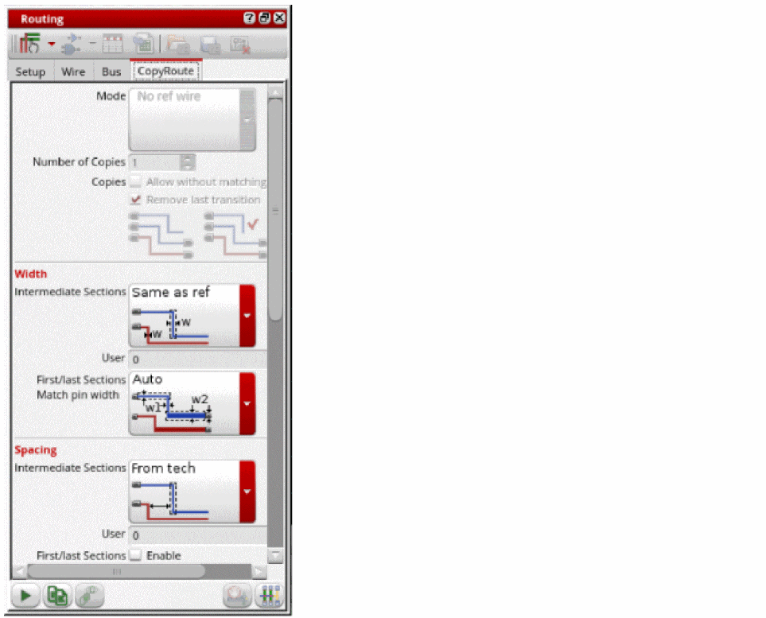
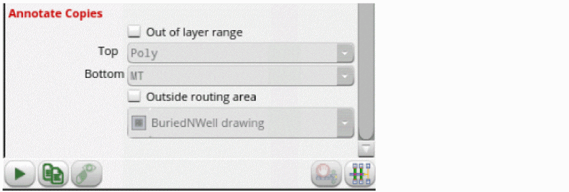

Setting Copy Route Options
The Copy Route command lets you work incrementally and generate thousands of bus wires. When there are pins or instance pins for the copies, the width and the spacing of the copy route is based on them. Otherwise, you can control the width and spacing settings for the intermediate transitions from the form.
The Copy Route tab in the Routing Assistant provides a number of options for customizing the behavior of copying routes. To set Copy Route options:
- Choose Windows – Assistant – Routing. The Routing assistant displays.
- Click the Change routing mode button on the Routing assistant toolbar and select Interactive as the routing mode.
-
Click the CopyRoute tab.
 - Set the Copy Route options you require in the different sections of the assistant. For more information on these options. see CopyRoute.
-
Click the Start Copy Route button at the bottom of the tab.

You can also set the copy route options in the Copy Route form. To open the Copy Route form, choose Edit – Wiring – Copy Route and press F3. For more information, see Copy Route Form.
Related Topics
Variables to Customize the Settings for Copy Route
Return to top